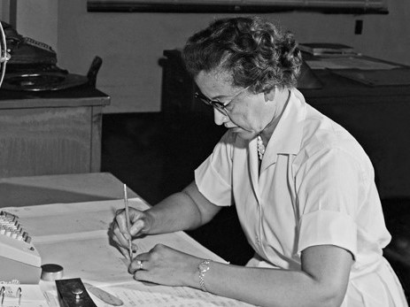
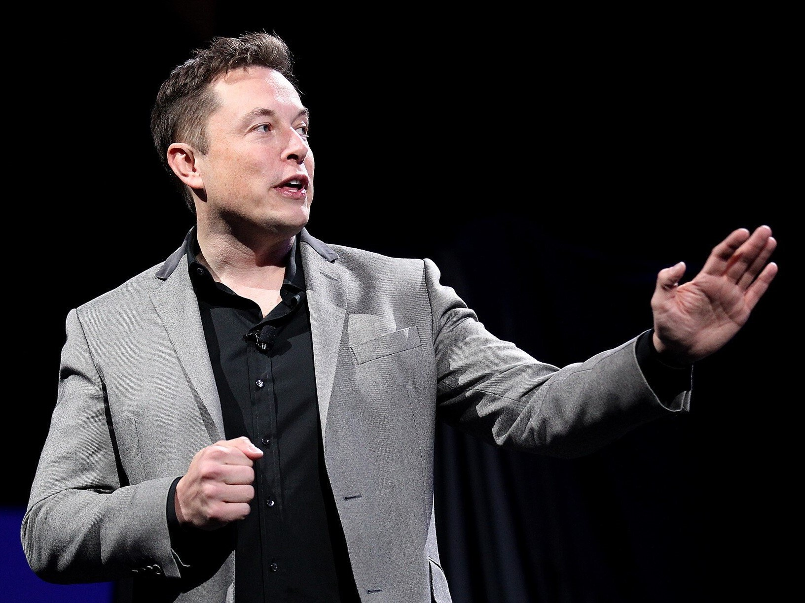

Figuras importantes de las STEM
A continuación podemos ver las biografías sobre algunas figuras históricas destacables en algún ámbito relacionado con las STEM, acrónimo referido a Science, Technology, Engineering and Mathematics; en español Ciencia, Tecnología, Ingeniería y Matemáticas.
STEM consiste un enfoque de enseñanza basado en la interdisciplinaridad y aplicabilidad de los conocimientos de ciencias y matemáticas. Si no conocías acerca de ellos mediante la siguiente tabla puedes en que campo de las STEM tienen relevancia cada uno:
Campo a los que se dedica cada uno
| |
Campo de las STEM |
| Pedro Cavadas |
Tecnología, biotecnología |
| Ada Lovelace |
Tecnología, programación |
| Katherine Johnson |
Matemáticas, tecnología |
| Elon Musk |
Tecnología, ingeniería |
Pincha aquí si el enlace del botón no funciona
Ada Lovelace
Pincha aquí si el enlace del botón no funciona
Katherine Johnson

Pincha aquí si el enlace del botón no funciona
Elon Musk

Pincha aquí si el enlace del botón no funciona
¿Por qué he escogido a cada uno?
En primer lugar, he escogido a Pedro Cavadas porque desde que supe quien era y que hacía a través de nuestro antiguo profesor de tecnología, que nos habló de él, me pareció admirable su trabajo. Su dedicación y su esfuerzo son un ejemplo a seguir, y de su trabajo se benefician inumerables pacientes a los que ha dado una 2º oportunidad.
A Ada Lovelace la he elegido porque no conocía tanto sobre ella, pero desde mi infancia me habían hablado sobre ella y sobre que fue una de las primeras mujeres matemáticas, lo cual no es del todo cierto. Me ha parecido muy interesante su recorrido estudiantil y como eludió la censura que se le impondría en la época por ser mujer.
En cambio, de Katherine Johnson si sabía algo más y si la elegí fue por conocer los detalles de como había llegado a su puesto en la NASA. Su carácter me han parecido muy admirable puesto que le ayudó a superar numerosas barreras para llegar hasta ese trabajo. Recomiendo ver la película de "Talentos ocultos" o "Hidden Figures", que habla sobre la historia de Katherine, además de las de sus compañeras de trabajo en la NASA Dorothy Vaughan y Mary Jackson.
Finalmente, si elegí a Elon Musk es porque conocía quién era, CEO de Tesla y de Space X entre otras compañías, pero no sabía como había llegado a ser quien era. Conocer sobre sus primeras empresas y que dejó la universidad me ha parecido muy interesante. Su nivel de ritmo de trabajo me parece admirable, aunque haya sido algo criticado por algunos de sus ex-trabajadores, puesto que a sus trabajadores les exije el mismo compromiso.